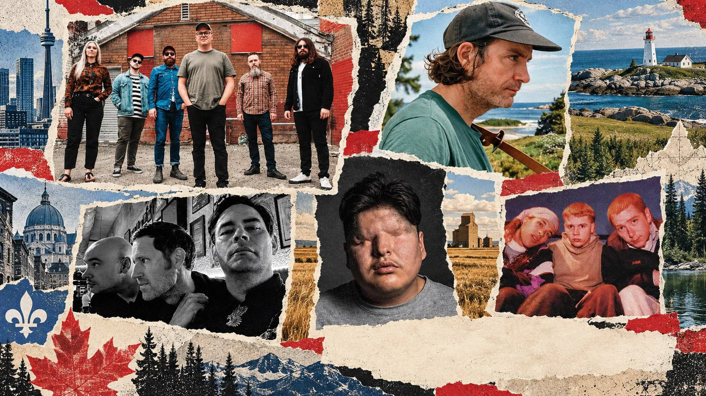
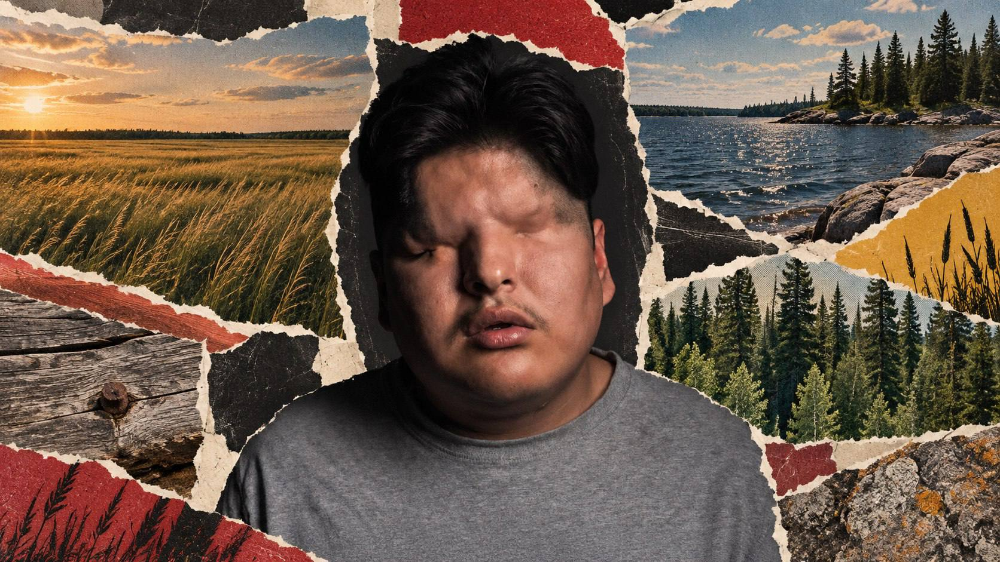
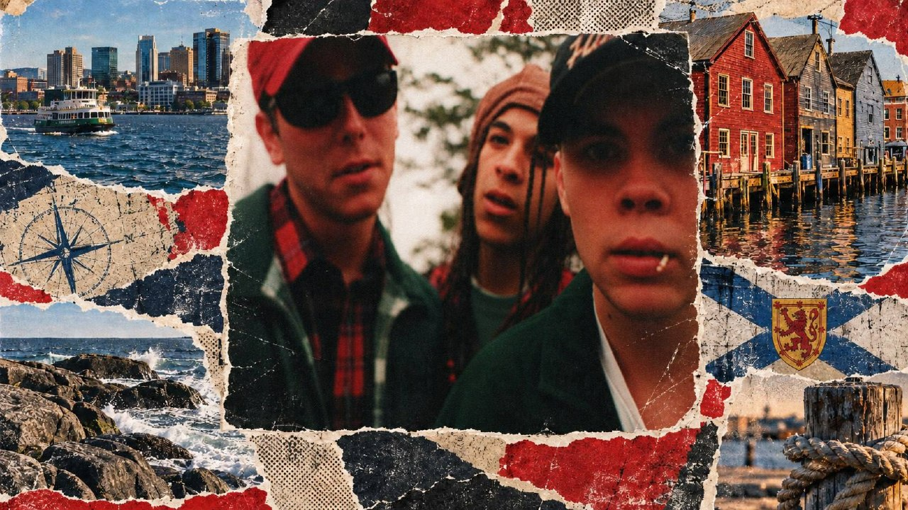
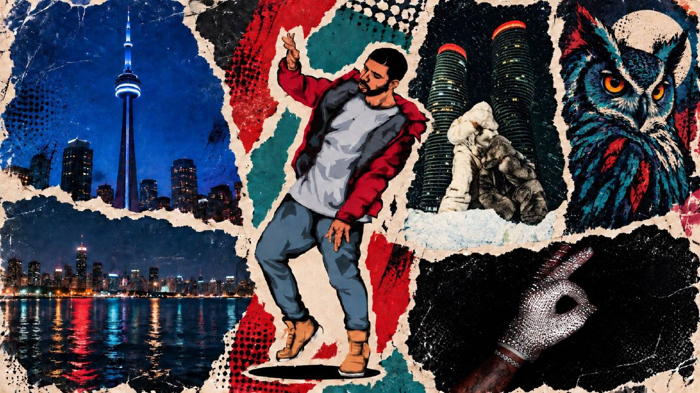

September 11, 2026 · New Canadian Music
5 New Canadian Releases to Bump This Weekend
Mattmac, CG Tears, Jon McKiel, Starpainter and a 30-year Hip Club Groove return lead this weekend's picks.
Read More
Digging deeper into the music we play

September 11, 2026 · New Canadian Music
Mattmac, CG Tears, Jon McKiel, Starpainter and a 30-year Hip Club Groove return lead this weekend's picks.
Read More
September 11, 2026 · Artist Feature
The Garden Hill artist connects home, Southern rap influence and his long creative partnership with QuestionATL.
Read More
September 11, 2026 · Artist Feature
The Truro-to-Halifax rap group reconnects for its first new song in three decades.
Read More
September 11, 2026 · If You Like...
Five routes out from Drake's catalogue through current Canadian rap and R&B.
Read More
September 11, 2026 · News Hit
The Toronto-raised artist opens her remix series to Chad Hugo, Terry Hunter, Shanti Celeste and Bianca Oblivion.
Read More
September 3, 2026 · M Is for Montreal
Five Montreal artists, five new 2026 releases, and one starting point for exploring the city’s current sound.
Read More
September 10, 2026 · If You Like...
Five different routes out from Kaytranada’s sound: house, R&B, Caribbean club music, funk and Montréal beat culture.
Read More
September 3, 2026 · Northern Dial After Dark
The Canadian artist turns dance, multilingual pop and emotional tension into a new chapter.
Read More
September 2, 2026 · Northern Dial After Dark
Five distinct Canadian voices across R&B, hip-hop, pop and independent music.
Read More
April 25, 2026
Montreal's Koko Love emerges from his Miko past with a stripped-back, patient sound on debut album The Cost of Freedom.
Read More
April 24, 2026
Toronto artist Lia Pappas-Kemps delivers a restrained, carefully shaped debut with Winged — a record that knows exactly what it wants to hold back.
Read More
April 23, 2026
Toronto-based indie electronic artist livingthing commands attention on Northern Dial After Dark with dreamy synth-pop and steady momentum.
Read More
April 23, 2026
Toronto-born, Brampton-raised producer Ghostboyrj builds a steadily expanding catalog of beats and collaborations across the city's underground.
Read More
April 13, 2026
A Toronto collaboration between Cynthia Tauro and Brendan Canning, TAURO’s Act I maps change and emotional recalibration with indie-soul precision.
Read More
April 10, 2026
Toronto-born independent R&B artist Haley Smalls keeps momentum high with 2025 projects The Cure IV and Matches.
Read More
April 10, 2026
Treaty 6 Saskatchewan-based Cree R&B/soul artist LÖV is building momentum with viral single Mama and her upcoming album Iskwêw.
Read More
April 10, 2026
There's a moment in Puma June's music where you can't quite place the genre — and that's exactly the point.
Read More